I set myself a goal in 2019: read, on average, a book per week. I achieved that goal, and then some. I think I was able to do it by deleting my social media and paying no attention to it. I found I still got plenty through cultural osmosis.
In order read, below is the list with some small thoughts on each book. One rule I set myself was that I did not have to finish a book I wasn't enjoying. So, all of these passed that test. A couple didn't and I won't bother you with those.
Riddance: Or: The Sybil Joines Vocational School for Ghost Speakers & Hearing-Mouth Children
By Shelley Jackson
What can you say about a story set partially in the land of the dead and partially in a school for children with speech impediments. Set at the turn of the 20th Century, this is one weird-ass book. The photos and other artefacts of the ghost speakers, make it more than just a novel. Not an easy thing to read, but ultimately it pays off if you stick with it. (512 pages)

Severance
By Ling Ma
Well, we won't have to worry aboug global warming since most folks will be killed by a worldwide pandemic. If want a picture of what happens to New York City when most its inhabitants are dead or dying, this is the novel for you. (297 pages)
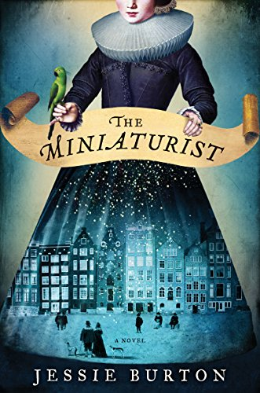
The Miniaturist
By Jessie Burton
If menacing dollhouses set in 17th Century Amsterdam are your cup of tea, you'll dig this one. Lots of period color and dark secrets. Based on an actual dollhouse. (419 pages)
How Long Til Black Future Month?
By N.K. Jemisin
N. K. Jemisin's "Broken Earth" series is so cool -- fantasy without dragons and swords. This collection of short stories was written over more than a decade, and I enjoyed each of them. (499 pages)

Golden State
By Ben Winters
You cannot tell a lie -- unless you want to attract the attention of the cops. What is reality? What is truth? What lies outside what is left of Southern California? Turns out Las Vegas is still there. (337 pages)
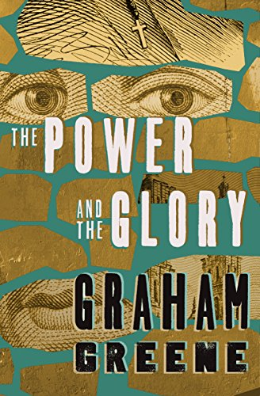
The Power and The Glory
By Graham Greene
In Mexico, where Catholocism has been outlawed, one terrible priest attempts to avoid execution. I'm not sure who the hero is here, but it definitely doesn't appear to be the common folk. (90 pages)
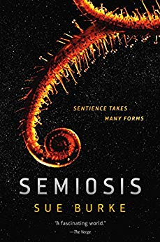
Semiosis
By Sue Burke
Sentient plants wage a silent, planet-wide war. And here come a bunch of humans looking at all the pretty flowers. (326 pages)

Early Riser
By Jasper Fforde
The United Kingdom is gripped by an ice age, so you gotta hibernate to survive the winter wasteland. You know a giant corporate will be figuring out how to monetize that. (413 pages)
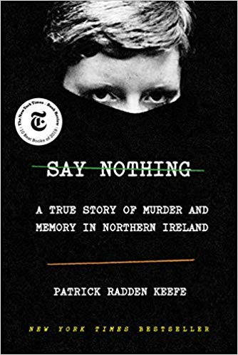
Say Nothing
By Patrick Radden Keefe
The Troubles in Northern Ireland have receded in memory, but the scars remain. A mother disappears under suspicious circumstances, a couple of sisters find themselves moving deeper into violence, and Gerry Adams is a class-A asshold (464 pages)
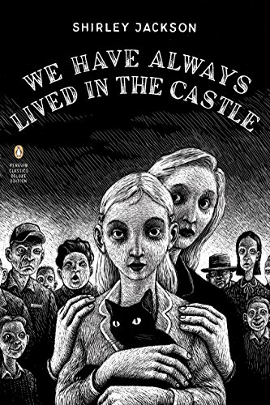
We Have Always Lived In The Castle
By Shirley Jackson
What a masterful suspense story. Slowly we learn the truth of why two sisters and their infirm uncle are hold up in an old house separate from the rest of the world. I was rooting for them to just be left alone -- of course, that doesn't happen. (162 pages)

Dreyer’s English
By Benjamin Dreyer
This book begs the question, "why is the English langauge so fun?" Mr. Dryer incented me to think deeply about words, and while he could probably care less, I found myself bemused and delighted. (320 pages)

The Three Body Problem
By Cixin Liu
The characters are like cardboard cutouts, but the story of Earth’s first encounter with an extraterrestrial civilization is through-provoking, weird, and confusing. Things do not look good for our one-dimensional heroes. First of a trilogy. (400 pages)
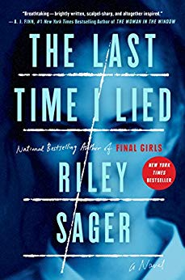
The Last Time I Lied
By Riley Sager
A summer camp mystery story with a Scooby Doo ending. (381 pages)

The Haunting of Hill House
By Shirley Jackson
Take a bunch of people, drop them into a haunted house, and let the good times roll. The scares feel real, and all we want is for our hero, Eleanor, to spread her wings and live a little. Spoiler: things don't really work out. (265 pages)

My Brilliant Friend
By Elena Ferrante
People love it. I thought it was fine. (331 pages)

The Long Way To A Small, Angry Planet
By Becky Chambers
First of a trilogy, this has a Firefly feel to it. A ragtag crew of freelance wormhole builders learn to live, love, trust, and share their secrets. The best of the trilogy. (423 pages)

Westside
By W.M. Akers
19th Century Manhattan in the Upside Down. Gangs own the streets, anything mechanical falls to dust, houses disappear. Something is not right here. (304 pages)

Children Of Time
By Adrian Tchaikovsky
Welp, humans have fucked it all up once again. Efforts to reach out past the solar system and colonize new planets have resulted in creating a race of sentient spiders and other invertibrates. Honestly, I found myself cheering for the spiders in this one. (640 pages)

Riots I Have Known
By Ryan Chapman
The editor of a prison creative writing magazine trends on Twitter and tries to explain why has done the things he's done. Meanwhile, they rioters are coming for him. The many jabs at Brooklyn hipsters are worth the price of admission. (128 pages)

The Logic of Sports Betting
By Ed Miller & Matthew Davidow
I know a bit about gambling, but sports betting has always been inscrutable. Since I have read Ed Miller's poker books in the past, I trust he knows this topic pretty well. I came away with a much better understanding of how this all works. But I'm still not really planning to get into better sports anytime soon. (237 pages)

The Mom Test
By Rob Fitzpatrick
How do you test a new product idea out and make sure you're getting feedback that is truly helpful? People really, really want to be nice and tell you what you want to hear. (138 pages)

Orange World
By Karen Russell
Where the hell to begin with this short story collection? I always jump a the chance to read Karen Russell's stories. They are just weird, and no one is alike. For instance, one story is about an old time tornado wrangler looking to raise one last beauty, another is about a man who falls in love with a dead girl preserved by Welsh bog, in another a woman becomes a Joshua tree. They're so inventive and each one is a crafted gem. (288 pages)

We Are Legion (We Are Bob)
By Dennis E. Taylor
Things are looking up for Bob. Until he dies and awakens as a disembodied consiousness destined to control a self-replicating Von Neumann probe. (383 pages)
Miracle Creek
By Angie Kim
Weirdo hyperbaric chamber treatments, Munchaussens-by-proxy, explosions. It’s a murder mystery and a study in the desperate lengths people will go to for their children. (349 pages)

For We Are Many
By Dennis E. Taylor
More Bobs means more fun. The Earth is in deep trouble, and the Bobs are tasked with finding inhabitable worlds. Also, there's a very nasty species out there intent on consuming whatever they come across. And Bob takes on the role of sky god. (321 pages)

All These Worlds
By Dennis E. Taylor
Now more Bobs are becoming a pain in the ass. Those nasty Others are still out there looking to consume Earth. Can Bob save humanity? (282 pages)

The Dark Forest
By Cixin Liu
So, the aliens are coming, and things look pretty bleak. Science things happen, and things aren’t as bleak — we’re gonna be okay! More scient things, and we’re definitely not okay. Sequel to The Three Body Problem. (513 pages)

The Cuckoo’s Calling
By Robert Galbraith
Cormoran Strike, a former Army investigator turned one-legged, civilian private detective, finds his Robin and solves a murder. (561 pages)

Fleishman Is In Trouble
By Taffy Brodesser-Akner
Toby Fleishman's relationship to his family is interesting, but I wanted more about the Fleishman who is really in trouble. Super New York-y. (376 pages)

Death’s End
By Cixin Liu
Last in the Three Body Problem trilogy. We’re saved, or, well, see, it’s not really saved so much as rebooted. Everything gets very weird as we come to find out what our true place in the universe is. (605 pages)
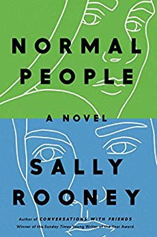
Normal People
By Sally Rooney
Not a whole lot happens for Marianne and Connell, but the way they revolve around each other and the way their fortunes wax and wane is really interesting. (268 pages)
The Silkworm
By Robert Galbraith
Cormoran Strike and Robin are back with some ritual disembowelment in the world of book publishing. I feel like our author is channeling some frustration. (465 pages)

The Freeze Frame Revolution
By Peter Watts
How do you mutiny against an intelligent starship that knows everything you're doing? (192 pages)
Player Of Games
By Iain Banks
A really good board game player overthrows a space empire. Was he a hero or a pawn in a greater game? There's also a cranky flying robot secret agent. (417 pages)

Where The Crawdads Sing
By Delia Owens
A murder mystery and the story of a feral orphan girl converge on two different timelines in 1950s and 60s North Carolina swamps. This one kept me guessing all the way. (379 pages)
The World Doesn’t Require You
By Rion Amilcar Scott
This is a hard one. The stories in this collection revolved around a town in Maryland that was the site of the only (fictional) successful slave revolt in America. The intertwined stories are sometimes magical, sometimes religious and musical, sometimes elaborately violent. I'm not exactly sure what I read, but it was worth reading. (310 pages)
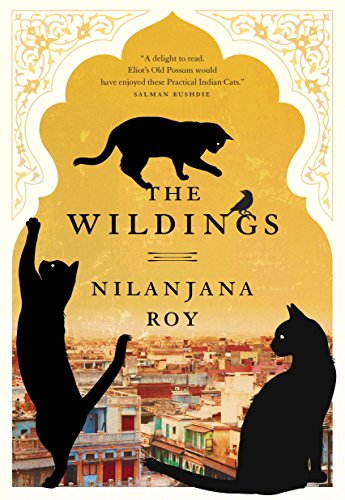
The Wildings
By Nilanjana Roy
Sentient cats in New Delhi! First in a series, though I think I'm done at one. Cat lovers will nod and smile in recognition often. (338 pages)
Shantaram
By Gregory David Roberts
A doorstop of a book at 900 pages, but it's a thrill ride. Makes me want to visit Mumbai and become a bad-ass. Has elements of "The Sun Also Rises" with all the witty ex-pats sitting around cafes. (946 pages)
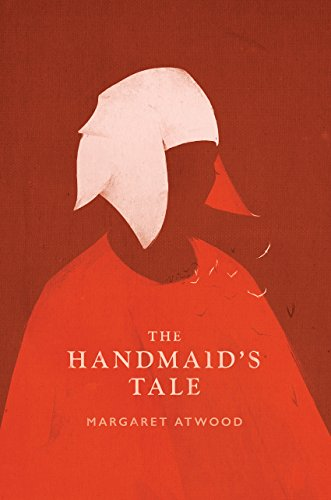
The Handmaid’s Tale
By Margaret Atwood
Rereading 30 years later to refresh my memory before reading "The Testaments" -- probably more chilling than it was in the Reagan years. (325 pages)

A Closed and Common Orbit
By Becky Chambers
An embodied, angsty A.I. and a punk-rock clone get up to some hijinks. But what about the degenerate planet that uses enslaved clone girls to recycle its electronics? Maybe we should, uh, do something about that? (365 pages)
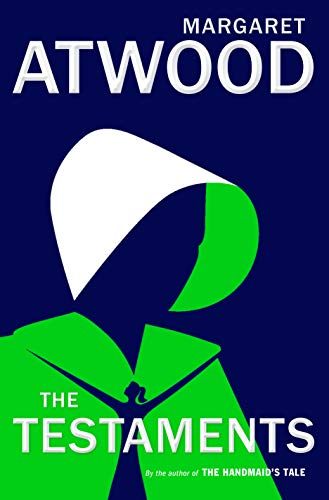
The Testaments
By Margaret Atwood
Three intertwined lives tel the story of the beginning of the end of Gilead. See, Aunt Lydia wasn't so bad after all. (381 pages)

The Butchering Art: Joseph Lister's Quest to Transform the Grisly World of Victorian Medicine
By Lindsey Fitzharris
Ever wonder where Listerine got its name? You'll know after you read this. Probably best not to read this while eating lunch. Lots of pus talk, some vomit. (284 pages)

The Road to Wigan Pier
By George Orwell
A British dilettante rattles on about poor people. With diversions to insult gay poets, and aspirin. Spoiler: there is no Wigan Pier. (131 pages)
How To Be An Antiracist
By Ibram X. Kendi
Race neutrality isn't enough -- there's a lot of racist institutions that need to be pulled down. (284 pages)

Medallion Status
By John Hodgman
The Bard of Park Slope's quest to maintain elite status even as his star as a TV show best pal fades. A funny rumination on middle age. (303 pages)

I Know Why the Caged Bird Sings
By Maya Angelou
Fuckin' Maya Angelou, y'all. I can't believe I hadn't read this before. Just read it everyone. (304 pages)
Ancillary Sword
By Anne Lecke
Second book about a warship's A.I. that gains a body and is on a mission to fuck some things up. All set in a universe where everyone is "she" and manners are highly important. (400 pages)
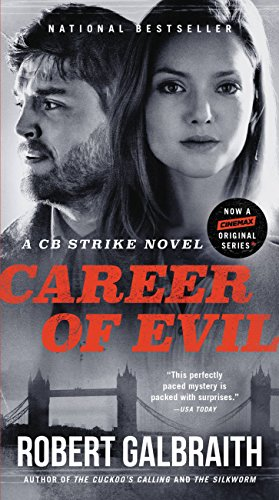
Career Of Evil
By Robert Galbraith
A grisly, violent installment in Cormoran Strike's career. Will they or won't they? I keep expecting Dumbledore to fix everything (spoiler: he doesn't). (609 pages)
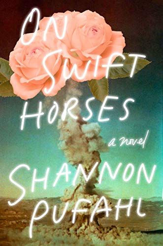
On Swift Horses
By Shannon Pufahl
Loneliness, desire, regret in 1957 Southern California. Reminds me of McCarthy's "Border Trilogy" in style. Also, basically everyone is gay. (320 pages)

Little Women
By Louisa May Alcott
A burgeioning lesbian is saved by a man. There is a lot of crying and a whole lot of petting. (566 pages)

Peter Watts Is An Angry, Sentient Tumor
By Peter Watts
From the very controversial (random killing of cops might have utility), to the lighlty controversial (YA literature is bad), to homages to his dead cats (Banana and Chip), Watts has a lot to say on about any topic you might thing of. This is a repurposing of years worth of blog posts. (320 pages)
The Triumph Of Christianity: How a Forbidden Religion Swept the World
By Bart Ehrman
So, how does a rag-tag crew led by a scruffy criminal launch a movement that becomes the state religion of the known world in under 400 years? And all without social media. It's a little like a virus. (353 pages)

The Uninhabitable Earth: Life After Warming
By David Wallace-Wells
Things are bad – like, real bad. Based on the latest IPCC report, they're even worse than this book makes out. The outlook presented is so dire, it took me several months to finish the book because I had to stop a couple of times. Ultimately there is some hope offered, but not much. (304 pages)
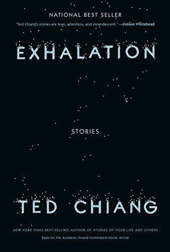
Exhalation: Stories
By Ted Chiang
Here (362 pages)
Howling At The Moon: The Odyssey of a Monstrous Music Mogul in an Age of Excess
By Walter Yetnikoff & David Ritz
Here (320 pages)

The Golden Ass
By Apuleius
Here (304 pages)